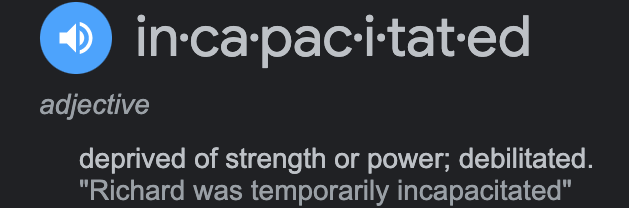

Britney Jean Spears (born December 2, 1981) is an American recording artist and entertainer. Born in McComb, Mississippi and raised in Kentwood, Louisiana, Spears began performing as a child, landing acting roles in stage productions and television shows. She signed with Jive Records in 1997 and released her debut album ...Baby One More Time in 1999. During her first decade within the music industry, she became a prominent figure in mainstream popular music and popular culture, followed by a much-publicized personal life. Her first two albums established her as a pop icon and broke sales records, while title tracks "...Baby One More Time" and "Oops!... I Did It Again" became international number-one hits. Spears was credited with influencing the revival of teen pop during the late 1990s.
Read more empireonline.com
In 2008, American singer Britney Spears was involuntarily placed on a three-day psychiatric hold two separate times. At the time, she had been experiencing conflicts in her personal life, including her divorce from Kevin Federline, shaving her head, attacking paparazzi, and losing custody of her two sons with Federline. Following the second hold, Spears's father, James "Jamie" Spears, filed a petition to institute a temporary conservatorship of Spears, which was made permanent that same year. Jamie served as the conservator of Spears's personal affairs as well as co-conservator of her finances.
Conservatorship is a legal status to which a court appoints a person to manage the financial and personal affairs of a minor or incapacitated person. A conservator may also serve as a guardian who is responsible for establishing and monitoring the physical care of the individual and managing their living arrangements. Learn more investopedia.com
| Song | Album | Year |
|---|---|---|
| Womanizer | Circus | 2008 |
| Hold It Against Me | Femme Fatale | 2011 |
| I Wanna Go | Femme Fatale | 2011 | S&M | Collaboration | 2011 |
| Scream & Shout | Single | 2012 |
| Big Fat Bass | Collaboration | 2012 |
| Work Bitch | Britney Jean | 2013 |
| Pretty Girls | Single | 2015 |
| Tom’s Diner | Déjà Vu | 2015 |
| Make Me… | Glory | 2016 |
It is possible that members of her family are sincere when they say that they hoped this was a temporary measure put in place until she regained control of her emotions and impulses. But more than a decade later, it has become clear that this is a system that is working well for everyone except the very person it is purported to protect.
When Spears spoke before a judge two months ago, she voiced shocking accusations regarding her treatment. According to Spears, she was not allowed to remove her IUD, was put on medications she said she does not need and expressed deep resentment for everyone complicit in this conservatorship.